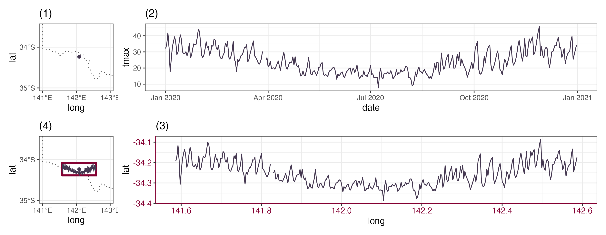
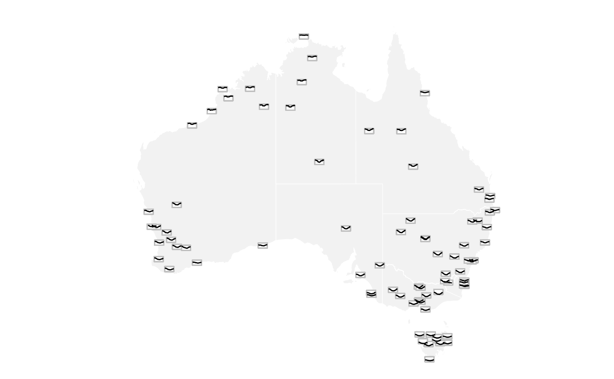

Sometimes, we wish to communicate spatial and temporal information collectively through visualisation. This can be achieved through several graphical displays: one can make faceted maps across time, creating map animations, or constructing interactive graphics to link between map and time series plot. While interactive graphics will be the main focus of vignette 6. Interactive graphics, this vignette will introduce a specific type of spatio-temporal plot called glyph maps.
The concept of glyph maps was initially proposed in Wickham et al. (2012). The underlying idea is to transform the temporal coordinates into spatial coordinates so that time series plot can be displayed on the map. The diagram below illustrates how the coordinate transformation:

Subplot (1) show the spatial location of a weather station and
subplot (2) displays its associated maximum temperature as time series
in 2020. In subplot (3), the temporal coordinates are transformed into
the spatial coordinates using linear algebra with a defined
height and width (Equation 1 in Wickham et al. (2012)), while the time series
glyph remains unchanged. The transformed time series can then be plotted
as a layer on the map in (4).
The package GGally initially implement the glyph map. It
uses glyphs() to calculate the axis transformation and then
uses geom_polygon() to draw the map. In cubble, a ggproto
implementation geom_glyph() performs the linear algebra
internally as data transformation . The geom_glyph()
requires four aesthetics: x_major, y_major,
x_minor, and y_minor. The major axes are the
outer spatial coordinates and the minor axes are the inner/ temporal
coordinates:
data |>
ggplot() +
geom_glyph(aes(x_major = ..., x_minor = ..., y_major = ..., y_minor = ...))Reference line and box can be added by separate geoms
(geom_glyph_box(), geom_glyph_line()) with the
same aesthetics (x_major, x_minor, y_major, y_minor). To
avoid repetition, you may want specify the aesthetics collectively
inside ggplot():
data |>
ggplot(aes(x_major = ..., x_minor = ..., y_major = ..., y_minor = ...)) +
geom_glyph_box() +
geom_glyph_line() +
geom_glyph()If you want add an undelying map which does not use the four glyph
map aesthetics, the argument inherit.aes = FALSE is
handy:
data |>
ggplot(aes(x_major = ..., x_minor = ..., y_major = ..., y_minor = ...)) +
geom_sf(data = MAP_DATA, inherit.aes = FALSE)
geom_glyph_box() +
geom_glyph_line() +
geom_glyph()Global Historical Climatology Network (GHCN) provides daily climate
measures from stations across the world. The dataset
climate_aus stores climate variables (precipitation,
maximum and minimum temperature) for 639 Australian stations in 2020.
This is a lot of stations to work with and we will start with a randomly
sample 80 stations (since not all the stations have the full year
record, we will only consider those that have 366 days for 2020):
set.seed(12345)
(tmax <- climate_aus %>%
rowwise() %>%
filter(nrow(ts) == 366) %>%
slice_sample(n = 80))
#> # cubble: key: id [80], index: date, nested form
#> # spatial: [114.6975, -43.6578, 153.6358, -11.1538], Missing CRS!
#> # temporal: date [date], prcp [dbl], tmax [dbl], tmin [dbl]
#> id long lat elev name wmo_id ts
#> <chr> <dbl> <dbl> <dbl> <chr> <dbl> <list>
#> 1 ASN00014829 131. -18.3 316. lajamanu 94231 <tibble>
#> 2 ASN00009131 115. -30.3 1.6 jurien bay 95600 <tibble>
#> 3 ASN00024048 141. -34.2 31.5 renmark aero 95687 <tibble>
#> 4 ASN00096071 146. -42.1 742 lake st clair national park 94976 <tibble>
#> 5 ASN00093053 147. -42.0 186 ross (the boulevards) 94985 <tibble>
#> 6 ASN00048027 146. -31.5 260 cobar mo 94711 <tibble>
#> 7 ASN00023885 139. -35.2 55 noarlunga 94808 <tibble>
#> 8 ASN00010286 117. -31.6 217. cunderdin airfield 95625 <tibble>
#> 9 ASN00009964 117. -34.6 250 rocky gully 94631 <tibble>
#> 10 ASN00008051 115. -28.8 33 geraldton airport 94403 <tibble>
#> # ℹ 70 more rowsNext, we would like to summarise the daily maximum temperature into
monthly. This can be done with the dplyr group_by +
summarise:
(tmax <- tmax %>%
face_temporal() %>%
group_by(month = tsibble::yearmonth(date)) %>%
summarise(tmax = mean(tmax, na.rm = TRUE)))
#> # cubble: key: id [80], index: month, long form, groups: month [12]
#> # temporal: 2020 Jan -- 2020 Dec [1M], no gaps
#> # spatial: long [dbl], lat [dbl], elev [dbl], name [chr], wmo_id [dbl]
#> month id tmax
#> <mth> <chr> <dbl>
#> 1 2020 Jan ASN00001018 33.5
#> 2 2020 Jan ASN00002012 37.0
#> 3 2020 Jan ASN00003030 34.0
#> 4 2020 Jan ASN00003032 34.9
#> 5 2020 Jan ASN00003057 33.5
#> 6 2020 Jan ASN00004028 36.9
#> 7 2020 Jan ASN00007600 37.6
#> 8 2020 Jan ASN00008051 31.0
#> 9 2020 Jan ASN00008137 35.0
#> 10 2020 Jan ASN00009037 34.3
#> # ℹ 950 more rowsOne requirement for the data to be plot with ggplot2 is that all the
variables mapped to aesthetics need to be store in the same table. In
cubble, you can move the spatial variables (e.g. long and
lat) into the temporal cubble with
unfold():
(tmax <- tmax %>% unfold(long, lat))
#> # cubble: key: id [80], index: month, long form
#> # temporal: 2020 Jan -- 2020 Dec [1M], no gaps
#> # spatial: long [dbl], lat [dbl], elev [dbl], name [chr], wmo_id [dbl]
#> month id tmax long lat
#> <mth> <chr> <dbl> <dbl> <dbl>
#> 1 2020 Jan ASN00001018 33.5 126. -16.4
#> 2 2020 Jan ASN00002012 37.0 128. -18.2
#> 3 2020 Jan ASN00003030 34.0 122. -18.7
#> 4 2020 Jan ASN00003032 34.9 124. -17.4
#> 5 2020 Jan ASN00003057 33.5 123. -16.5
#> 6 2020 Jan ASN00004028 36.9 120. -20.1
#> 7 2020 Jan ASN00007600 37.6 118. -28.1
#> 8 2020 Jan ASN00008051 31.0 115. -28.8
#> 9 2020 Jan ASN00008137 35.0 117. -30.9
#> 10 2020 Jan ASN00009037 34.3 116. -30.3
#> # ℹ 950 more rowsUsing the glyph map syntax introduced in this vignette, we can then create a glyph map:
tmax %>%
ggplot(aes(x_major = long, y_major = lat,
x_minor = month, y_minor = tmax)) +
geom_sf(data = ozmaps::abs_ste,
fill = "grey95", color = "white",
inherit.aes = FALSE) +
geom_glyph_box(width = 1, height = 0.5) +
geom_glyph(width = 1, height = 0.5) +
coord_sf(xlim = c(110, 155)) +
theme_void() +
theme(legend.position = "bottom") +
labs(x = "Longitude", y = "Latitude")